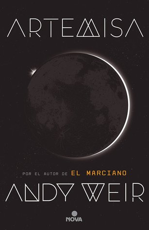

Artemisa
Reseña por Jorge I. Zuluaga

Ver reseña en GoodReads (necesita cuenta)
Así lo demostró en sus novelas más populares, El Marciano y Proyecto Hail Mary , ambas adaptadas ya al cine como exitosos blockbusters, y así lo vuelve a demostrar sin lugar a dudas en Artemisa.
La primera sorpresa que me llevé al buscar la página de este libro en Goodreads es que la comunidad de esta red social —la más grande comunidad de amantes de los libros en el mundo— ha calificado a Artemisa con un modesto 3.6 sobre 5. O bueno, ese es por lo menos el puntaje que tiene a la fecha en la que escribo esta reseña, aunque con más de 300.000 calificaciones creo que no cambiará mucho en el futuro.
Como un fanático de los libros de Weir y de la ciencia ficción dura, me queda muy difícil comprender cómo tantas personas que seguro han leído a este autor —nadie llega a Artemisa por azar— pueden calificarla con 1 o 2 estrellas (que es típicamente lo que se necesita para obtener un puntaje tan bajo). Es cierto que Weir dejó la barra muy alta en sus dos libros anteriores; también puede pensarse que su impresionante éxito con esos libros creó un hype del que Artemisa fue víctima, pero, contrario a lo que esperaba de ese puntaje, Artemisa no defrauda —al menos no lo hizo en mi caso, a pesar de que ya me habían advertido que "no era tan buena"— y, al contrario, me sorprende que el autor haya inventado una historia completamente diferente a la que vimos en sus dos primeros libros.
La primera sorpresa que me llevé al empezar la novela —porque trato de no leer nada sobre ella antes de comenzar, incluyendo malas reseñas— es que la protagonista de Artemisa es ahora una mujer, Jasmine "Jazz" Bashara. No, Artemisa no está protagonizada por el hombre solitario, el MacGyver —se me cayó la cédula con esta referencia— que vimos en sus dos novelas anteriores y que vemos en tantos otros libros de ciencia ficción. Ya era momento para que Weir le hiciera justicia a las mujeres y las pusiera como protagonistas de una historia en la que la técnica, las hazañas físicas y los riesgos propios de los viajes espaciales están en el centro. En un mundo justo, la probabilidad de que la persona que protagonice una historia como esta sea del 50%. De modo que el historial de Weir se está aproximando a la proporción adecuada.
La segunda sorpresa es que Jazz es de origen árabe. No es una gringa ni una europea, como lo son casi siempre los protagonistas de las novelas de ciencia ficción. Y no solo eso: Artemisa, la novela y la colonia, están llenas de personas de una multitud de nacionalidades, como era de esperarse en un proyecto de exploración humana conjunta de la Luna. Pero las sorpresas no terminaron allí. Resulta que a Weir se le ocurrió pensar que en un futuro lejano —según entrevistas que dio, la novela se desarrolla en la década de 2080— el país que lidera la expansión humana en la Luna es un país africano, Kenia. ¡Genial!
Para muchas personas todas estas cosas no son más que la respuesta a presiones "woke" que buscan que haya más "inclusión" en la literatura y en el cine. Es posible que la mayoría de esas mismas personas se pueda identificar fácilmente por su nacionalidad, clase o sexo con los protagonistas de casi todas las novelas y películas de ciencia ficción. Pero para quienes hoy estamos más en los márgenes —aunque yo soy privilegiado en muchas cosas, soy ciudadano de un país latinoamericano— este esfuerzo de un autor de éxito de imaginarse un mundo diferente y más diverso no solo es justo y refrescante, sino bastante más realista. Porque esto último es lo que no han entendido las personas que se burlan de estos esfuerzos: el mundo es cada vez más complejo y menos homogéneo de lo que era hace unas décadas.
Antes de comenzar la novela, no tenía la más remota idea de cuál podría ser la historia. Sabía que tenía que ver con la Luna —el nombre la delata— pero, a diferencia de lo que pasa en El Marciano y Proyecto Hail Mary, hay tantas cosas que pueden pasar en la Luna que es difícil saber por dónde se va a meter un autor. Weir escoge la criminalidad y el bajo mundo, que siempre nos acompañarán adonde sea que vayamos los humanos en patota. Jazz, la protagonista, es una contrabandista que ha fallado en su intento por conseguir un mejor trabajo en la Luna en el gremio de las EVA —por Extravehicular Activities—, es decir, de las personas que están autorizadas para salir de Artemisa en misiones que van desde el acompañamiento a turistas hasta la seguridad de los complejos industriales. La primera tercera parte de la novela se dedica a ponernos en situación, describir la historia de las personas que viven en Artemisa, las clases en las que se estratifican —porque adonde van los humanos, van todos sus defectos sociales—, la alimentación, el hospedaje, la moneda —¡muy interesante!—, las leyes y la forma en la que intentan que se cumplan.
En el resto de la novela se desarrolla el núcleo de la historia, que gira alrededor del complot a una corporación minera, multimillonaria y corrupta, de origen brasileño —otra vez nos sorprende Weir por su elección—. Una vez se establece la trama central, la historia tiene una acción trepidante que te mantiene en vilo y te obliga a cuidar todos los detalles científicos y técnicos para no perderte.
La descripción del ambiente lunar es bastante realista. No esperaba menos cuando la acción se realiza, a diferencia de las novelas anteriores, en el único lugar que han pisado los humanos en la historia. Leyendo Artemisa, la persona curiosa y atenta aprenderá cosas fascinantes sobre lo que puede ser para los humanos vivir en un lugar con una gravedad mucho menor que la de la Tierra, sin una atmósfera que nos proteja de la agresiva radiación solar, un lugar cubierto de un peligroso polvillo, el regolito lunar, que se cuela en todas partes y que puede destruir tus pulmones. También aprendemos cantidades importantes de datos sobre la geología y el potencial mineral y químico de la Luna. Soy astrónomo, trabajo en ciencias planetarias y puedo dar confiada fe de que los datos que nos da Weir en esta novela son verídicos.
El desarrollo de los personajes es también muy bueno. En las novelas anteriores, en las que los protagonistas se reducen a unos cuantos seres humanos o extraterrestres, la importancia de tener una compleja red de caracteres no era tan grande como en esta. Y aunque Weir no es Dostoievski o Cervantes, los personajes de Artemisa me han impresionado gratamente en su desarrollo. Naturalmente, de todos ellos, el mejor de lejos es el personaje de Jazz. Entrañable y distinto a muchos de los personajes de ciencia ficción que he conocido.
Me han gustado también las tecnologías de comunicaciones y electrónicas que concibió Weir para esta novela. Una mezcla de dispositivos de baja tecnología (soldadores, elevadores, incluso pistolas —una sola en toda la novela—) y dispositivos cuya tecnología está a caballo entre el presente y el futuro, tales como los famosos gizmos —una especie de teléfonos celulares futuristas—, los trajes espaciales para las EVA, los rovers avanzados o las esferas de hámster usadas por los turistas en la Luna, le dan un realismo adicional a la obra. A veces el extremo optimismo de los y las creadoras de ciencia ficción muestra que desconocen que el avance de la tecnología sigue caminos a veces muy conservadores.
Me pasó que, leyendo a Artemisa, que es una novela del 2017, me preocupé por cómo se leerá esta historia en el 2084 y cuáles tecnologías que surgirán en estos años estarán ausentes y cuáles habrán desaparecido completamente. Espero que esta sensacional novela envejezca mejor de lo que lo hicieron las novelas de la saga Fundación de Isaac Asimov.
Personalmente, Andy Weir no me decepcionó con Artemisa. Tampoco la juzgo y espero que ustedes no lo hagan, comparándola con las novelas anteriores. Me quedo a la espera de su adaptación cinematográfica, que cuando escribo esta reseña ya ha sido anunciada, y por supuesto de cualquier novela futura de este nerd empedernido.